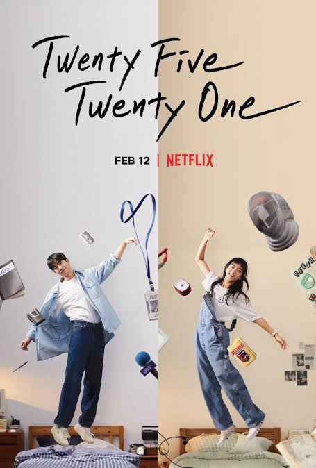

Séries
Agora vamos para as séries, confesso que é muito dificio decidir as séries, pois é o que mais faço, assistir séries, filmes nem tanto, gosto mais de acompanhar diversos episódios e me aprofundar na história de cada personagem.
=======Se a Vida te der Tangerinas========
Eu primeiramente achei muito triste mas, fala muito sobre a vida, as dificuldades, além do romance ele é bem realista, mostra as dificuldades da vida, fala sobre pobreza, dificuldade para estudar, a garota da série sofre nos estudos por se mulher, ela é muito inteligente mas a escola favorece os homens. enfim, muito boa.

=====Vinte e Cinco Vinte e Um======
Esse é o meu Dorama favorito, é a história de uma garota que sonha em ser uma atleta de esgrima. Mas ela passa por bastante dificuldade para conseguir realizar o seu sonho, nesse meio tempo ela conhece um jornalista que se torna seu par romântico.
